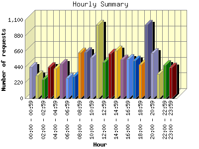
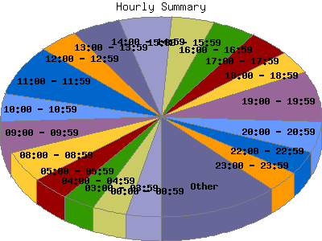

Report generated by Analog 6.0 and Report Magic 2.21
|
Web Server Statistics for "Harish Narayanan (hnarayan) - September 2006" Report generated by Analog 6.0 and Report Magic 2.21 |
The Hourly Summary identifies the level of activity broken down by each hour. Remember that one page hit can result in several server requests as the images for each page are loaded. This summary also compares the level of activity during working hours and after hours as a total for the report time frame.


| Hour | Number of requests | Number of bytes transferred | Percentage of the bytes | Percentage of the requests | |
|---|---|---|---|---|---|
| 1. | 00:00 - 00:59 | 440 | 23.046 MB | 2.21% | 3.48% |
| 2. | 01:00 - 01:59 | 319 | 27.714 MB | 2.66% | 2.52% |
| 3. | 02:00 - 02:59 | 268 | 14.076 MB | 1.35% | 2.12% |
| 4. | 03:00 - 03:59 | 438 | 13.299 MB | 1.28% | 3.46% |
| 5. | 04:00 - 04:59 | 415 | 17.752 MB | 1.71% | 3.28% |
| 6. | 05:00 - 05:59 | 477 | 15.494 MB | 1.49% | 3.77% |
| 7. | 06:00 - 06:59 | 285 | 25.722 MB | 2.47% | 2.25% |
| 8. | 07:00 - 07:59 | 308 | 11.604 MB | 1.11% | 2.44% |
| 9. | 08:00 - 08:59 | 641 | 16.234 MB | 1.56% | 5.07% |
| 10. | 09:00 - 09:59 | 649 | 125.047 MB | 12.01% | 5.13% |
| 11. | 10:00 - 10:59 | 570 | 22.219 MB | 2.13% | 4.51% |
| 12. | 11:00 - 11:59 | 1,029 | 100.732 MB | 9.67% | 8.14% |
| 13. | 12:00 - 12:59 | 506 | 21.960 MB | 2.11% | 4.00% |
| 14. | 13:00 - 13:59 | 625 | 25.370 MB | 2.44% | 4.94% |
| 15. | 14:00 - 14:59 | 669 | 34.260 MB | 3.29% | 5.29% |
| 16. | 15:00 - 15:59 | 546 | 37.371 MB | 3.59% | 4.32% |
| 17. | 16:00 - 16:59 | 553 | 159.086 MB | 15.28% | 4.37% |
| 18. | 17:00 - 17:59 | 528 | 89.101 MB | 8.56% | 4.18% |
| 19. | 18:00 - 18:59 | 473 | 23.162 MB | 2.22% | 3.74% |
| 20. | 19:00 - 19:59 | 1,027 | 111.361 MB | 10.70% | 8.12% |
| 21. | 20:00 - 20:59 | 633 | 31.250 MB | 3.00% | 5.01% |
| 22. | 21:00 - 21:59 | 344 | 13.194 MB | 1.27% | 2.72% |
| 23. | 22:00 - 22:59 | 467 | 60.678 MB | 5.83% | 3.69% |
| 24. | 23:00 - 23:59 | 433 | 21.520 MB | 2.07% | 3.42% |
| Work Hours (8:00am-4:59pm) | 5,788 | 542.279 MB | 52.08% | 45.78% | |
| After Hours (5:00pm-7:59am) | 6,855 | 498.972 MB | 47.92% | 54.22% | |
This report was generated on November 12, 2006 23:03.
Report time frame September 1, 2006 00:41 to September 30, 2006 23:59.
| Web statistics report produced by: | |
 Analog 6.0 Analog 6.0 |  Report Magic 2.21 Report Magic 2.21 |